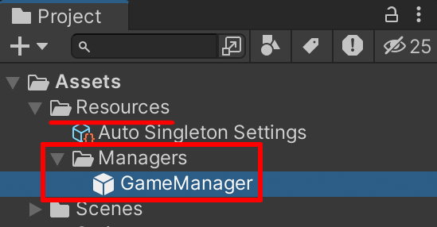

Self Singleton
유동적으로 사용 가능하며, DontDestroyOnLoad를 재정의하여 씬이 변경되면 파괴되도록 할 수 있습니다.
싱글턴 객체 만들기
using UnityEngine;
public class GameManager : MonoBehaviour
{
}
싱글턴 또는 매니저로 만들고 싶은 MonoBehaviour 클래스를 작성합니다.
using UnityEngine;
using USingleton.SelfSingleton;
public class GameManager : Singleton
{
}
다음 내용을 추가 작성 및 수정합니다.
프리팹 생성하기

Tools -> USingleton -> Refresh을 클릭합니다.

리소스 폴더에 자동으로 프리팹이 생성됩니다.
(프리팹 이름은 클래스 이름과 동일합니다.)
접근 하기
using UnityEngine;
using USingleton;
public class TestCode : MonoBehaviour
{
private void Start()
{
Singleton.Instance<GameManager>().HP = 100;
}
}
다음과 같이 작성하여 접근할 수 있습니다.
Tip
Singleton.Instance() 로 접근했을 때 싱글턴 객체가 없을 경우 리소스 폴더에서 로드하여 자동으로 생성합니다.
추가적 옵션
using USingleton.SelfSingleton;
public class GameManager : Singleton
{
protected override bool DontDestroyOnLoad()
{
return false;
}
}
DontDestroyOnLoad를 재정의하여 씬이 변경될 때 파괴되도록 할 수 있습니다.
주의
using USingleton.SelfSingleton;
public class GameManager : Singleton
{
protected override void Awake()
{
base.Awake();
}
protected override void OnDestroy()
{
base.OnDestroy();
}
}
Awake와 OnDestroy를 재정의할 때 Base.Awake()와 Base.OnDestroy()를 호출해야 합니다. 이 메서드들은 Singleton.instance를 동작시키는 등록과 해제 작업을 수행합니다. 만약 Base.Awake()와 Base.OnDestroy()를 호출하지 않으면, 문제를 발생시킬 수 있습니다.
만약, 어플리케이션의 실행과 마지막까지 계속 살아있는 Singleton 객체를 만들고 싶다면 Auto Singleton을 사용하는 것을 추천합니다. 단일 씬에서만 사용되는 싱글턴 객체를 만들고 싶다면 Self Singleton을 사용하는 것을 추천합니다.